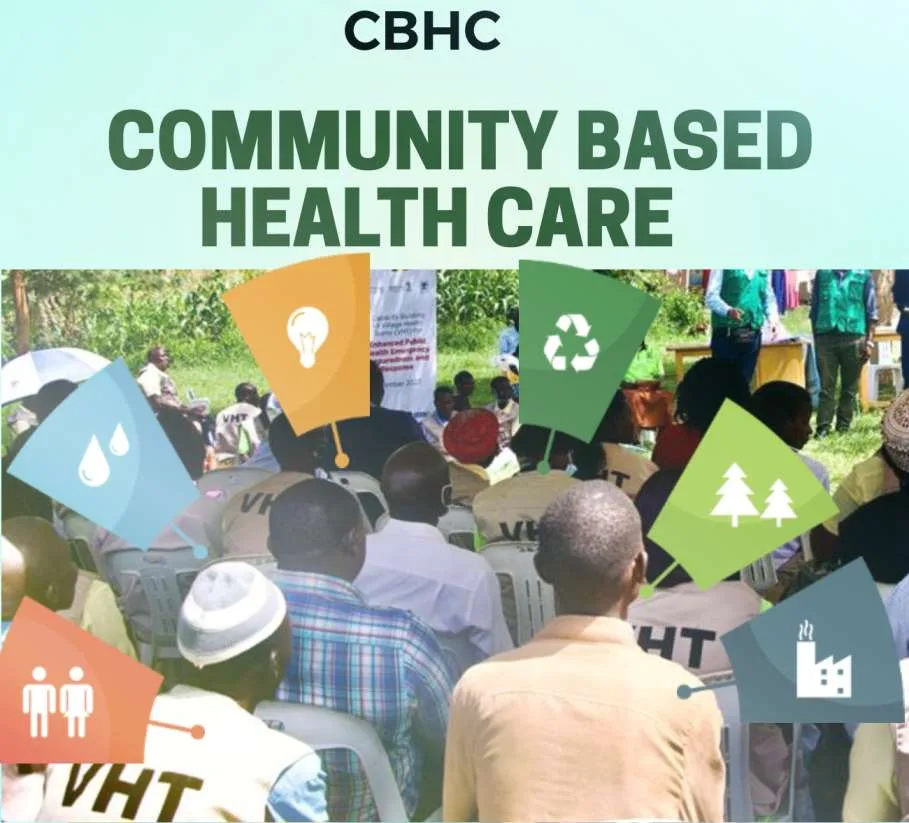

Expanded Nursing Uganda Explanation
Introduction to community based health care should be reviewed through safe maternal and newborn assessment, early recognition of danger signs, respectful communication and timely referral. Connect the definition to vital signs, bleeding, fetal or newborn wellbeing, patient education and local protocol requirements.
Contents, 15 sections (tap to expand)
01 Introduction
Community Based Health Care (CBHC) is part of Primary Health Care (PHC) while more concerned with people. CBHC is viewed in the context that when giving care to patients, you must put in mind that client needs continuous care even when you have left. It shows that community participation is very important and doesn’t work in isolation when giving care, involve them in plan so that they take responsibility. Since most of resources come from the community like food and other materials. It will be simple if you can teach them how to make use of them in the care.
02 The need for PHC and CBHC arises from the following.
- Most illnesses can be prevented : the most common illnesses are preventable or controllable, either by the people themselves or a combined effort between the people and government or other partner (NGO) services e.g. malaria.
- Morbidity and Mortality rates can be reduced : a reduction in this suffering can only happen if there is more “encouragement” and “enablement” of individuals and communities together to have a positive attitude towards preventive habits and to be willing to take part in improving their local amenities, rather than expecting the people to go to the health services and development projects.
- The encouraging and enabling cannot go on within the walls of the hospitals and health centers; it must go on in the villages and homes.
- Coverage of health services: even if there was full service in the health units, there are still few e.g. dental and mental services and they are mainly located in towns and rural population have little access to essential health care.
03 Objectives of CBHC
The main objective of CBHC is to encourage and enable the community to take care for its own health and welfare, if the community can,
- Identify its own health problems
- Find solutions for those problems
- Make its own decisions
- Find (identify) resources outside the community
- Evaluate its actions and replan
- Together and individually make healthy behaviors into common practices and habits.
04 CBHC activities
- Provision of information, education and training concerning prevailing health problems in communities and the methods of preventing and controlling them
- Promotion of proper nutrition,
- Maternal and child care;
- Immunization against the major infectious diseases;
- Prevention and control of locally endemic diseases such as diarrheal diseases, acute respiratory infection and malaria;
- Reproductive health services, including family planning and the prevention and control of sexually transmitted infections with particular emphasis on HIV/AIDS;
- Appropriate treatment for common diseases and injuries; ;
- Community Mental health;
- Rehabilitation for people with disabilities and
- School health activities
05 Advantages of CBHC
- Community becomes responsible to care for their own health problems.
- Empowers community to take systematic care of their health using available means at affordable costs.
- Helps the community members in planning, making decision, implementation and evaluation of health care approach in the community
- Gives the communities sense of ownership and belonging in the health care system.
- It cuts down costs of health care delivery
- It reduces on dependency the government and donors,
- Helps health workers to have knowledge base in family theory, principle of communication, group dynamic and cultural diversity in care of the patients at community level.
- CBHC forces distance by giving services nearest to the community members, hence become easily accessible.
- Creates awareness with – in the community on various health issues.
- Individual families and communities are actively involved in health activities
- Promotes holistic care that is physical, psychologically, spiritually and culturally.
- Bridges the gap between community and extension worker e.g. from other ministries e.g. Agriculture.
- It promotes unity
- Helps to get appropriate action
- Improves the quality of life
- Community development
- Early identification of the individual
- Mutual interaction
- Uplifts the standards of living
06 Disadvantages of CBHC
- Diagnosis is made on assumption in most cases no investigations
- Increases stigma.
07 Source of the CBHC services
- TASO (The AIDS Support Organization)
- UWESO (Uganda Women’s Effort To Save Orphans)
- CGC (Concern for the Girl Child)
- Hospice that provides palliative care services
08 Village Health Team (Community Based Workers)
The structure is put in place to facilitate the process of community mobilization, empowerment and participation in delivery, management and implementation of health services at house hold level. The overall goal of the village health team/ committee is to a chieve an improved quality of life by strengthening service delivery at house hold level.
09 Roles or responsibilities of village health team
- Facilitate the community to identify an recognize their health problems
- Mobilize community for health programs e.g. immunization, malaria control etc
- To collect information and maintenance of record book of house hold members and use it for planning and other programs.
- Serves as a link between the community and health providers.
- Follow up patients or clients
- Conduct home visit
- Identify individuals who need care at and outside their homes and refer appropriately.
- Provide basic health message for behavioral change.
- Distribution of drugs, supplies, information , communication, materials , insect treated nets.
- Serves as role model in the community, collaborate with other community structures or other ministries.
10 Basic health services done by the VHT
Advice and information will be given on: Diseases > Giving treatment and managing simple illness at home > Sexually transmitted diseases (HIV/AIDS, ) > Tuberculosis (TB) Family > Family Planning (child spacing) > Pregnancy, delivery and care of new born baby > Adolescent sexual and reproductive health > Breast feeding > Food and nutrition > Abuse and violence > Immunization > Mental health The home > Water and sanitation > Hygiene > First Aid
How will the basic health services be done? > Community mapping > Community registers > Home visits > Talking with neighbors about health issues which have been found.
What should community members do? > Select and support VHT > Attend village health events > Use health services
> Improve personal and family health
What should local leaders do? > Inform communities about VHT > Advocacy for health at home > Mobilize communities for health > Supervision of VHT activities > Give financial support > Planning for VHT in district and village health plans > Attend and support health events
Selection of a village Health Team (VHT/C) will be done on popular vote after sensitization and conservation, building of all stake holders. A = 20 – 30 house holds The following will be to guide the voting (selecting) process > Mature 18 years and above > A resident of the village > Able to read and write / a least the local language > A good communication skills). > A dependable & trust worthy person > Interested in health and development issues. > Should be a resource person in the community.
Composition of village health team / committee > Community own resource persons. (CORPS) > Local leaders > Any similar resource persons in the community.
His / her specific tasks are not to be confined to health care delivery alone but also other aspects of development e.g. food production, and income generating activities. CORPS includes the following > Community Health Workers > Traditional Birth Attendants (TBA). > Traditional healers > Community Drug Distributors (CDD). > Community HIV/AIDS counselor. > Community reproductive health workers. > Community DOTS. (DOTS – Directly Observed Therapy Short course.)
> Peer educators, etc.
A CORP has to carry out the following duties/ responsibilities:- > Home Visiting and advising and personal hygiene and environmental sanitation. > Advising and educating communities on matters related to:- – Food production and Nutrition – Prevention of diseases – Use of safe water. – Identify health problems (concerns) and prioritize together with community members. > Keeping records and using them for organizing, prioritizing, implementing, monitoring, and evaluation of health services. > Identifying individual and families at risk and refer them for further management.
11 TECHNIQUES USED TO ESTABLISH COMMUNITY HEALTH ACTIVITIES
Below are the steps taken to establish community health activity.
- Community approach
- Community entry
- Community Assessment
- Community situation analysis (Diagnosis)
- Community mobilization
- Community participation
- Community organization
- Community empowerment
- Community based rehabilitative services for disabled and disadvantaged groups
12 Nursing Uganda Clinical Lens
Use Introduction to community based health care as a practical nursing topic, not only a memorized definition. Move from individual illness to prevention, population risk, health education and continuity of care.
- What to understand first: define introduction to community based health care, identify the normal or expected pattern, then explain what changes when the patient is unwell.
- Why it matters in care: the nurse must recognize risk early, explain findings clearly, document accurately and know when to escalate.
- How to revise it: connect each point to assessment, nursing diagnosis or care problem, intervention, rationale and evaluation.
13 Assessment Guide
- Who is affected, where they live, risk factors, resources and barriers to care.
- Environmental hygiene, nutrition, immunization, water, sanitation and health-seeking behaviour.
- Community beliefs, leaders, household practices and surveillance data.
14 Nursing Priorities, Rationales and Outcomes
- Promote prevention, early detection, referral and community participation.
- Use clear health education matched to literacy, culture and available resources.
- Document findings and coordinate with community health structures.
The rationale for these priorities is patient safety: nursing actions should prevent deterioration, reduce discomfort, support recovery and create clear evidence for the next caregiver.
- Expected outcome: The community understands the message, risk is reduced and follow-up or referral pathways are active.
15 Patient Teaching and Revision Check
- Explain introduction to community based health care in simple language the patient or caregiver can repeat back.
- Teach warning signs, medicine or follow-up instructions, hygiene or lifestyle points where relevant.
- For exams, prepare a short answer using: definition, causes or risk factors, signs, assessment, management, complications and prevention.
- For ward practice, document baseline findings, actions taken, patient response and the plan for review.
Illustrations and Diagrams (14)



6 more diagrams available, open the lesson for full illustrations.
Related Video Lectures
Watch nursing lecture videos on YouTube for this topic. Opens in a new tab.
Watch on YouTubeExternal link: YouTube may use its own cookies and terms. Nursing Uganda is not affiliated with YouTube.